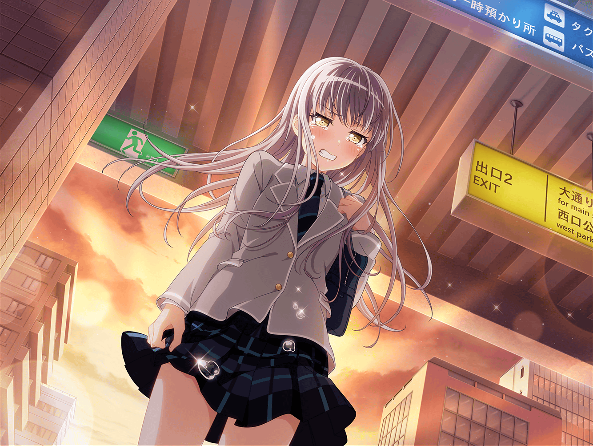

スタジオ
リサ
紗夜〜〜何かわかった？
取り戻し方！
紗夜
そんなにすぐにわかったら、苦労しないわよ
リサ
だってさ〜……
紗夜
そういう今井さんは、宇田川さん達と連絡はとれたの？
リサ
うーん……雑談っぽいメッセは返事くるんだけど、
練習の話になると濁されちゃって……
紗夜
前途多難ね
リサ
はあ……あ、でもさ。
こういうこと言ったら怒られちゃうかもしれないけど、
アタシ、ちょっと嬉しくって
紗夜
何を言ってるの、こんな時に……
リサ
バンドをはじめたての頃もさ、こんな風にバラバラに
なっちゃったことあったじゃん？
リサ
その時もアタシ、友希那に必死に向き合った。
わかんないことばっかりだったけど、アタシなりに考えてさ
リサ
でも、こうやってアタシ自身が弱音を吐いたりできる
相手っていなくて
紗夜
あ、あの時は私も、個人的な悩みがあって……
それどころではなかったのよ……
リサ
ううん、そうじゃなくて……アタシ自身が勝手に
抱え込んでたのかもなって
リサ
こんな風に、友希那やRoseliaについて
相談できる相手がいることってアタシにとってはすごく嬉しい
リサ
それって、お互いに心を開いたからこそなのかなーって。
えへへ……
紗夜
今井さん……
紗夜
……こ、こういう話はすべてが解決したあとにしましょう。
今は目の前の問題に真剣に取り組まないと
リサ
そうだよね、ゴメンゴメン！
……紗夜
紗夜
何？
リサ
一緒に、がんばろ
紗夜
最初からそのつもりよ
友希那
二人共、お疲れ様
リサ
ゆ、友希那……！ おはよ！
友希那
練習をはじめましょう
リサ
……あ、あのさ、友希那……
紗夜
湊さん、一つよろしいですか？
友希那
何かしら
紗夜
Roseliaの音を取り戻さなければならない。
それはわかります。ですが……昔のような未熟な状態に
戻る必要はないのではないでしょうか
紗夜
私達は成長しました。それを無下にするようなことは……
友希那
……からない……
リサ
友希那……？
友希那
わからないのよ！！
友希那
他にどうしたらいいのか、わからないの！
見つからないから……こうするしか……っ！！
友希那
こうするしか……ないじゃない……！
リサ
……っ！
紗夜
私だって、わからないですよ！
でも、こんな形でこれまでの経験を全部なかったことに
したくないんです！！
紗夜
個人的な話ですが……私は、バンドに入ったからこそ、
成長することができました
紗夜
妹と約束したんです。彼女の隣を並んで歩けるように
なると……前に進んでいくと……
紗夜
湊さん……あなただって同じはず。
お父様の大切な歌を歌ったこと。
それも全部なかったことにするんですか？
友希那
……それは……
友希那
……っ
リサ
あっ、友希那……！！
紗夜
……

駅前
友希那
……

友希那
……っ
友希那
うっ……うう……っ
友希那
（わからない……自分が何をしているのかも、
なぜこんなやり方しかできないのかも……！）
友希那
（どんどん、遠のいてる……
このままじゃ、何もかも失ってしまうかもしれない……）
香澄
友希那……先輩？
友希那
……戸山さん？